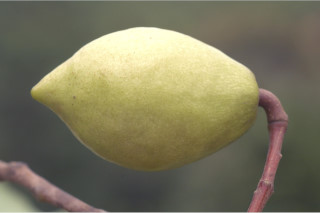
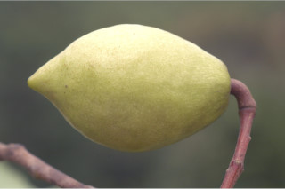

Trees, 10-15 m tall
10 ರಿಂದ 15 ಮೀ. ಎತ್ತರದ ಬೆಳೆಯುವ ಮರಗಳು
10 മുതല് 15 മീറ്റര് വരെ ഉയരമുളള മരങ്ങള്.
மரம் 10 முதல் 15மீ. உயரம் வரை வளரக்கூடியது
Bark brownish, fissured; blaze light orange.
ತೊಗಟೆ ಕಂದು ಬಣ್ಣಹೊಂದಿದ್ದು ಸೀಳಿಕಾ ವಿನ್ಯಾಸವನ್ನು ಹೊಂದಿರುತ್ತದೆ; ಕಚ್ಚು ಮಾಡಿದ ಜಾಗ ಮಂದವಾದ ಕೆಂಪು ಬಣ್ಣ ಹೊಂದಿರುತ್ತದೆ.
വിണ്ടുകീറിയ തവിട്ടുനിറത്തിലുളള പുറംതൊലി; വെട്ടുപാടിന് ഇളം ഓറഞ്ച് നിറമാണ്.
மரத்தின் பட்டை ப்ரவுன் நிறமுடையது, வெடிப்புகளுடையது; உள்பட்டையின் நிறம் ஆரஞ்சு நிறமுடையது
Branchlets terete, glabrous.
ಕಿರುಕೊಂಬೆಗಳು ದುಂಡಾಗಿದ್ದು ರೋಮರಹಿತವಾಗಿರುತ್ತವೆ.
ഉപശാഖകള് ഉരുണ്ടതും അരോമിലവുമാണ്.
சிறுநுனிக்கிளைகள் குறுக்குவெட்டுத் தோற்றத்தில் வளையமானது, உரோமங்களற்றது.
Leaves simple, alternate, spiral; stipule caducous; petioles 1-2 cm long, glabrous; lamina 6-12 x 3-5 cm, elliptic or obovate, apex acute to obtuse, base attenuate, margin serrate, glabrous, coriaceous, axils of primary veins with glands beneath; secondary_nerves ca. 5 pairs, forked glabrous domatia in axils; tertiary_nerves broadly reticulate.
ಎಲೆಗಳು ಸರಳವಾಗಿದ್ದು,ಪರ್ಯಾಯ ಮತ್ತು ಸುತ್ತು ಜೋಡನಾ ಮಾದರಿಯಲ್ಲಿದ್ದು ಕುಡಿಕೊಂಬೆಗಳ ತುದಿಯಲ್ಲಿ ಗುಂಪಾಗಿರುತ್ತವೆ;ಕಾವಿನೆಲೆಗಳು ಉದುರಿ ಹೋಗುತ್ತವೆ;ತೊಟ್ಟುಗಳು 1-2 ಸೆಂ.ಮೀ. ಉದ್ದವಿದ್ದು ರೋಮರಹಿತವಾಗಿರುತ್ತವೆ;ಪತ್ರಗಳು 6-12 X 3- 5 ಸೆಂ. ಮೀ. ಗಾತ್ರ, ಅಂಡವೃತ್ತ ಅಥವಾ ಬುಗುರಿ ಆಕಾರದಲ್ಲಿದ್ದು, ಚೂಪಾದ ಮಾದರಿಯಿಂದ ಹಿಡಿದು ಚೂಪಲ್ಲದ ಗುಂಡಾಕಾರದ ತುದಿ, ಒಳಬಾಗುವ ಮಾದರಿಯ ಬುಡ , ಗರಗಸ ದಂತಿತವಾದ ಅಂಚು ತೊಗಲನ್ನೋಲುವ ಮೇಲ್ಮೈ ಹೊಂದಿದ್ದು ರೋಮ ರಹಿತವಾಗಿರುತ್ತವೆ;ಪತ್ರಗಳ ಮುಖ್ಯ ನಾಳಗಳ ಅಕ್ಷಾಕಂಕುಳಿನಲ್ಲಿ ರಸಗ್ರಂಥಿಗಳಿರುತ್ತವೆ; ಎರಡನೇ ದರ್ಜೆಯ ನಾಳಗಳು ಅಂದಾಜು 5 ಜೋಡಿಗಳಿದ್ದು ಕವಲುಗೊಂಡಿರುತ್ತದೆ ಹಾಗೂ ಪತ್ರದ ತಳಬಾಗದ ಅಕ್ಷಾಕಂಕುಳಿನಲ್ಲಿ ರೋಮರಹಿತವಾದ ಸಹಜೀವಿ ಗೂಡುಗಳ ಸಮೇತವಿರುತ್ತವೆ; ಮೂರನೇ ದರ್ಜೆಯ ನಾಳಗಳು ವಿಶಾಲವಾದ ಜಾಲಬಂಧ ನಾಳ ವಿನ್ಯಾಸದಲ್ಲಿರುತ್ತವೆ.
ലഘുവായ ഇലകള് ഏകാന്തരക്രമത്തില്, സര്പ്പിളമായി അടുക്കിയിരിക്കുന്നു; അനുപര്ണ്ണങ്ങള് എളുപ്പം കൊഴിഞ്ഞ് വീഴുന്നവയാണ്; അരോമിലമായ ഇലഞെട്ടിന് 1 മുതല് 2 സെ.മീ വരെ നീളം; പത്രഫലകത്തിന് 6 സെ.മീ മുതല് 12 സെ.മീ വരെ നീളവും 3 സെ.മീ മുതല് 5 സെ.മീ വരെ വീതിയും, ദീര്ഘവൃത്താകാരംതൊട്ട് അപഅണ്ഡാകാരം വരെയാണ്, പത്രാഗ്രം നിശിതം തൊട്ട് ഉപകോണാകാരംവരെയാണ്, പത്രാധാരം നീണ്ടുനേര്ത്തതാണ്, അരികുകള് ദന്തിതമാണ്, അരോമിലം, ചര്മ്മില പ്രകൃതം, കീഴ്ഭാഗത്ത് പ്രാഥമിക സിരകളുടെ കക്ഷത്തില്, ഗ്രന്ഥികളുണ്ട്; ശാഖിതമായ, ഏതാണ്ട് 5 ജോഡി ദ്വിതീയ ഞരമ്പുകളുണ്ട്, ഇവയുടെ കക്ഷങ്ങളില് അരോമിലമായ ഡോമേഷ്യയുണ്ട്, വീതിയേറിയ ജാലിതമായ ത്രിതീയ ഞരമ്പുകള്.
இலைகள் தனித்தவை, மாற்றுஅடுக்கமானவை, சுழல் போன்ற அமைப்புடையது, இலையடிச்செதில் உதிரக்கூடியது; இலைக்காம்பு 1-2 செ.மீ. நீளமானது, உரோமங்களற்றது; இலை அலகு 6-12 X 3-5 செ.மீ., நீள்வட்டம் முதல் தலைகீழ் முட்டை வடிவம், அலகின் நுனி கூரியது முதல் மழுங்கியது, அலகின் தளம் அட்டனுவேட், அலகின் விளிம்பு செரேட் (ரம்பம் போன்ற பற்களையுடையது), உரோமங்களற்றது, கோரியேசியஸ், இலையின் கீழ்பரப்பில் முதல் நிலை நரம்புகளின் கோணங்களில் சுரப்பிகள் காணப்படும்; இரண்டாம் நிலை நரம்புகள் 5 ஜோடிகள், கிளைத்தது, உரோமங்களற்ற டொமேஸ்சியாவை கோணங்களில் கொண்டவை; மூன்றாம் நிலை நரம்புகள் அகன்ற வலைப்பின்னல் அமைப்பு கொண்டது.
Inflorescence axillary racemes, red, 4-7 cm long, glabrous; flowers white.
ಪುಷ್ಪಮಂಜರಿಗಳು ಅಕ್ಷಾಕಂಕುಳಿನಲ್ಲಿರುವ ರೋಮರಹಿತವಾದ ಮಧ್ಯಾಭಿಸರ ಮಾದರಿಯಲ್ಲಿದ್ದು, ಕೆಂಪು ವರ್ಣಹೊಂದಿದ್ದು 4 ರಿಂದ 7 ಸೆಂ.ಮೀ. ಉದ್ದ ಹೊಂದಿರುತ್ತದೆ; ಹೂಗಳು ಬಿಳಿ ಬಣ್ಣದಲ್ಲಿರುತ್ತದೆ.
4 സെ.മീ. മുതല് 7 സെ.മീ വരെ നീളമുള്ള, ചുവപ്പു, അരോമില, കക്ഷീയ റസീം പൂങ്കുലകളാണ്; വെളുത്ത പൂക്കള്.
இலைக்கோணங்களில் காணப்படும் ரெசீம் மஞ்சரி, சிவப்பு நிறமுடையது, 4-7 செ.மீ. நீளமானது, உரோமங்களற்றது; மலர்கள் வெண்மையானது.
Drupe, obovoid, apiculate, 4-5 x 2.5 cm, smooth, shining green; 1-seeded.
ಡ್ರೂಪ್ಗಳು ಬುಗುರಿಯ ಆಕಾರದಲ್ಲಿದ್ದು 4 X 3 ಸೆಂ ಮೀ.ವರೆಗಿನ ಗಾತ್ರ, ಹೊಳಪುಳ್ಳ ಹಸಿರು ಬಣ್ಣ,ನಯವಾದ ಮೇಲ್ಮೈ ಹೊಂದಿದ್ದು ಅಗ್ರದಲ್ಲಿ ಸೂಕ್ಷ್ಮವಾದ ಮೊನಚು ಮುಳ್ಳನ್ನು ಹೊಂದಿರುತ್ತವೆ ಹಾಗೂ ಒಂದು ಬೀಜವನ್ನೊಳಗೊಂಡಿರುತ್ತವೆ.
ഒറ്റവിത്തുളള കായ, അറ്റത്തൊരുമുനപ്പോടുകൂടിയ, 4 സെ.മീ മുതല് 5 സെ.മീ വരെ നീളവും 2.5 സെ.മീ വീതിയുമുളള, മിനുസമുളള, അപഅണ്ഡാകാര ഡ്രൂപ്പ് ആണ്.
உள்ளோட்டுத்தசைகனி (ட்ரூப்), தலைகீழ் முட்டை வடிவம், ஏபிகுலேட், 4-5 X 2.5 செ.மீ. வழுவழுப்பானது, மின்னும் பச்சை நிறமுடையது; ஒரு விதை கொண்டது.


 
